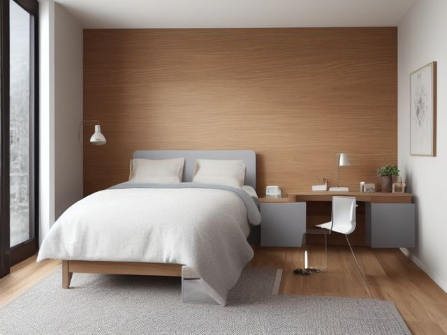

Guest Bedroom micro zone
The Guest Welcome and Work Surface
The guest welcome and work surface, in the Guest Bedroom. Where a guest lands the suitcase, charges a laptop, and answers the email they came to this room to escape. A clear desk with a working lamp, a chair pulled up to it, a luggage rack or a taped floor square for the suitcase, one labeled bin holding a spare charger, wifi card, water glass, tissues and a folded spare blanket, and a reachable outlet with no cord crossing the floor.
One session: 30-45 min, most of it in Sort, clearing whatever the desk has been holding for the rest of the house.
The short version
- Sort. Clear the surface completely, it will be holding gift wrap, an ironing pile
- Straighten. Put the welcome bin where a guest sees it the moment they stand
- Shine. Wipe the desk and the chair seat and back, both
- Safety. The classic hazard here is the extension lead run across the floor
- Standardize. Photograph the room in its ready state
- Sustain. When you carry the departing guest's sheets to the wash, the welcome bin comes
Each step in full, with what to have on hand and what done looks like, below.
Where it is
Guest Bedroom
5 micro zones, one session each
- 1The Guest Bed and Linens
- 2The Guest Nightstand
- 3The Guest Dresser
- 4The Guest Closet
- 5The Guest Welcome and Work Surface
What done looks like
Where a guest lands the suitcase, charges a laptop, and answers the email they came to this room to escape.
- A clear desk with a working lamp
- A chair pulled up to it
- A luggage rack or a taped floor square for the suitcase
- One labeled bin holding a spare charger, wifi card, water glass
+ 2 more on this page
What done looks like
A clear desk with a working lamp, a chair pulled up to it, a luggage rack or a taped floor square for the suitcase, one labeled bin holding a spare charger, wifi card, water glass, tissues and a folded spare blanket, and a reachable outlet with no cord crossing the floor.

Common items here
- A desk and lamp
- A luggage rack or taped floor square
- A welcome bin: spare charger, wifi card, water glass, tissues, a folded blanket
Check these before you start
- FallAn extension lead running from the desk across the open floor to the only reachable outlet, in the strip of carpet a guest walks in the dark.
- Fall, cut, or crushA folding luggage rack that has never been load tested, or a hard case balanced on the desk edge, in a room where a child may be playing while you carry cases in and out.
Which of these is true here?
Match what you are actually seeing in the guest welcome and work surface to why it keeps happening, then start at the pass that fixes that, not the top of the list.
The desk is holding gift wrap, an ironing pile that never made it back to the wardrobe, or a printer that hasn't been switched on all year
- This room is doing a second job for the household, and nobody's decided how much of that job this desk can honestly keep. Confirm in 30 seconds: Pick up one piece. If your first thought is a verb (pay, sign, call, decide) rather than a place, it needs a decision, not a home. If that checks out, start at Sort.
- None of this has a home somewhere else in the house, so the closest quiet surface holds it. Confirm in 30 seconds: Ask where one specific item lives. If two people answer differently, or nobody answers, it has no home. If that checks out, start at Straighten.
- It's been sitting there long enough that it doesn't register as something to clear anymore. Confirm in 30 seconds: Ask someone who does not live here to name what looks out of place. If they see it instantly and you had stopped noticing, this is the cause. If that checks out, start at Sort.
An extension lead runs across the open floor to the only reachable outlet, or a hard case is balanced on the desk edge while cases are carried in and out
- This is a real trip, fall, and crush risk the moment a guest walks this floor in the dark or a child is in the room while cases move. Confirm in 30 seconds: Look for the four: a blade your hand would meet, weight above shoulder height, heat beside something that burns, and an unsafe placement near a child's reach. If that checks out, start at Safety.
- The only reachable outlet sits on the far side of the room from the desk, so the lead has to cross the walking path to reach it. Confirm in 30 seconds: Stand where you use it and count the steps to where it is kept. More than two is the wrong cabinet. If that checks out, start at Straighten.
- It's the household's own habit to balance things on the desk edge, and nobody's re-checked that habit since a guest room started needing it clear. Confirm in 30 seconds: Ask someone who does not live here to name what looks out of place. If they see it instantly and you had stopped noticing, this is the cause. If that checks out, start at Sort.
Clearing this room's second job off the desk would take more than one trip, or something would need unplugging first
- The second job was never given its own marked footprint, so it spread across the whole desk instead of staying in one bin. Confirm in 30 seconds: Ask two people in the house to describe this zone when it is finished. Two different answers means there is no standard to keep. If that checks out, start at Standardize.
- This activity genuinely needs more room than a shared desk can honestly give it. Confirm in 30 seconds: Put back only what belongs here. If it still will not close, or still stacks four deep, the capacity is the problem, not the habit. If that checks out, start at Sort.
- Nobody has actually run the one-trip test to find out; it's just assumed to be fine. Confirm in 30 seconds: Ask who resets this zone. If the honest answer is "whoever gets to it" or two names with no agreement, there is no owner. If that checks out, start at Sustain.
Only have 15 minutes? Clear the surface completely. It will be holding gift wrap, an ironing pile that never made it back, a printer that has not been switched on this year, and paperwork someone brought in here to deal with in peace. The ironing goes back to the wardrobe it came from, the printer either earns a desk somewhere it gets used or leaves the house, and the paperwork goes into the file it was always headed for. Victory: The desk stands clear with a working lamp, and no cord crosses the walking line to the outlet.
The six passes, in order
Work them in this order. Sorting after you have arranged things means arranging things you were about to remove.
This zone's full kit list is below, after the method. Skim it first if you would rather gather everything before you start.
Sort
Decide what stays. Everything else leaves the zone now.
Clear the surface completely. It will be holding gift wrap, an ironing pile that never made it back, a printer that has not been switched on this year, and paperwork someone brought in here to deal with in peace. The ironing goes back to the wardrobe it came from, the printer either earns a desk somewhere it gets used or leaves the house, and the paperwork goes into the file it was always headed for.
What to store it in, now that you know what you are keeping
Bins and shelves are for what Sort left behind, not a stand-in for it. Buying storage before sorting means buying a container for things you have not yet decided to keep.
Only if it applies to the guest welcome and work surface: 5 more
Not every home needs these for the guest welcome and work surface. Each one is here because some do, and the reason is next to it.
- Matching Hanger Set ×30 Standardize hanging storage and reduce visual noise, in the Straighten, Standardize and Sustain passes. Do not overload; anchor wall-mounted or tall systems where required.
- Woven Basket Small ×2 Contain soft or decorative daily-use items, in the Straighten, Standardize and Sustain passes. Do not overload; anchor wall-mounted or tall systems where required.
- Over-Door Hook Rack Add reversible vertical storage, in the Straighten, Standardize and Sustain passes. Do not overload; anchor wall-mounted or tall systems where required.
- Shoe Rack Contain active footwear and preserve floor paths, in the Straighten, Standardize and Sustain passes. Do not overload; anchor wall-mounted or tall systems where required.
- Towel Shelf Basket ×3 Contain towels and linen sets, in the Straighten, Standardize and Sustain passes. Do not overload; anchor wall-mounted or tall systems where required.
Straighten
Give what stays a home, placed where the hand actually reaches.
Put the welcome bin where a guest sees it the moment they stand in the doorway, and set the luggage rack where a suitcase can open fully without hitting the bed frame or the closet door.
Shine
Clean it, and use the cleaning to inspect what you cannot see when it is full.
Wipe the desk and the chair seat and back, both of which collect a dust film in an unused room, and check the desk lamp works now rather than during a guest's first evening.
Surface by surface, all 6 of them, with what to use on each.
Safety
Make the zone safe for everybody who uses it, including the shortest person.
The classic hazard here is the extension lead run across the floor because the only outlet is behind the bed. Move the desk to the outlet rather than the outlet to the desk, and if a suitcase must live on a folding rack, open it and lean on it to be sure it holds a packed case without folding.
Standardize
Write down the best way you know today, so it survives you forgetting.
Photograph the room in its ready state and keep the print inside the lid of the welcome bin, so setting up is matching a picture rather than remembering a list.
Sustain
Attach the reset to something that already happens, so it keeps itself.
When you carry the departing guest's sheets to the wash, the welcome bin comes with you and gets restocked on the way back. Host's job, five minutes. The ready-state photo inside the lid is the check, so slip is a comparison rather than a memory: whatever is in the photo and not in the bin is what you are missing. Recovery is filling the gaps, not rebuilding. This bin gets raided between visits because it holds a spare charger, tissues and a water glass, which are what the rest of the house runs out of.
The kit this zone called for
Everything above assumed you had these already. Types of thing, not brands: anything you already own that does the job is the right one to use.
- Color-coded microfiber cloth set ×12 Shine Wash by use color; avoid fabric softener.
- Neutral pH multi-surface cleaner Shine, Sustain Verify surface compatibility; lock around children and pets.
- Compact vacuum with attachments Shine Use appropriate attachment.
- Keep, Relocate, Donate, Recycle, Trash container set ×5 Sort Do not block exits.
- Portable cleaning caddy Straighten, Shine, Sustain Secure chemicals from children and pets.
- Portable label maker Standardize, Sustain Follow surface and adhesive guidance.
- Removable write-on labels Standardize Test on delicate finishes.
Only if it applies to the guest welcome and work surface: 2 more
- Floor-material-compatible cleaner Shine, Sustain Match cleaner to floor material.
- Surge Protector with Overload Protection Straighten, Safety Install and use according to product instructions.
The room's second job
Almost every guest room is also something else: the home office, the sewing room, the place the exercise bike ended up. Pretending otherwise is precisely why hosting takes an afternoon, because you are not tidying, you are relocating an entire activity under time pressure. Name the second job out loud and give it a marked footprint, then test it honestly: can you clear that footprint into one bin or one cupboard, in a single trip, without unplugging anything? If yes, share the room and set the boundary in tape. If no, the second job is too big to share this room, and something moves out for good. That decision is uncomfortable, and it is the one that turns hosting from an event into a bed change.
Cleaning it properly, surface by surface
A guest lands a suitcase here, plugs in a laptop, and answers the email they came to this room to escape. Clean it so it works on their first evening, not so it looks good in a photo, and check the lamp comes on before they need it.
Work down, not across. Whatever comes off a high surface lands on the one below it, so cleaning the floor first means cleaning it twice.
Carry these in with you. Neutral pH multi-surface cleaner; Color-coded microfiber cloth set; Compact vacuum with attachments; Upholstery tool for the vacuum; Floor-material-compatible cleaner; Portable cleaning caddy.
- The desk lamp
Dust the shade and wipe the base with the neutral pH cleaner, then switch the lamp on and off to confirm it lights now, rather than leaving a guest to find a dead bulb after dark on their first night. - The desk top and front edge
Clear the desk to bare and wipe the whole top with the neutral pH cleaner, giving the front edge an extra pass where wrists and forearms leave a film. - The desk back edge, cable clip, and the space behind
Reach the back edge and the cable clip, then pull the desk out enough to vacuum the dust and stray cords behind it, the gap that never gets seen. - The welcome bin and its contents
Wipe out the labeled bin, wash the water glass, top up the tissues, and shake out and refold the spare blanket so it is fresh for a guest reaching for it in the night. - The chair and the luggage rack
Wipe the chair seat, back, and arms with the neutral pH cleaner, or run the upholstery tool over a fabric seat, and wipe the legs. Wipe down the luggage rack and its webbing straps so a guest sets a clean case onto a clean rack. - The floor under the desk and rack
Vacuum the carpet or floor under the desk and the luggage rack. On a sealed hard floor, follow with the floor-material-compatible cleaner along the guest's walking line.
How to clean anything else in the house, surface by surface.
Inspect as you clean. Cleaning is the only time you see the zone empty, so use it.
- As you clear the desk cords, flag a plug or extension lead that feels warm, looks scorched, or has a cracked outer sleeve.
- Flag a desk lamp that flickers or will not come on when you test it.
- Flag frayed webbing or a loose hinge on the folding luggage rack as you wipe it down.
- Flag a water ring or a heat mark on the desk top left by a past mug or laptop charger.
- Flag a wobble in a desk leg or a chair joint that has worked loose under weight.
The standard that keeps it fixed
Clear desk, marked suitcase footprint, one labeled welcome bin with the ready-state photo inside the lid, and no cord crossing a walking line.
Reset trigger. When the guest's sheets go into the machine, the welcome bin is restocked and put back before you leave the room.
How much the guest welcome and work surface can actually hold
A clear desk with a working lamp and a chair pulled up to it, a luggage rack or taped floor square for the suitcase, one labeled welcome bin, and a reachable outlet with no cord crossing the floor.
If the desk cannot be cleared, this room has a second job and the guest is the one paying for it. Move the household work onto a tray that lifts off before a visitor arrives. Run the honest count.
When this does not describe your guest welcome and work surface
The passes above describe the ordinary case. Plenty of real households are not ordinary, and the fix is not to skip the method, it is to run it against a different starting shape.
- No room for a desk
- The welcome bin matters more and moves to the dresser top or a shelf. What a guest actually needs is the wifi card, a charger and a glass of water: the desk is the nicety, the bin is the promise.
- Guests who work while they stay
- The outlet and the chair stop being decorative. Sit in that chair at that desk for an hour rather than a minute, and put a second outlet or a short extension within reach, clipped so nothing crosses the floor.
The rest of the guest bedroom
Each of these is one session on its own.
- The Guest Bed and Linens
- The Guest Nightstand
- The Guest Dresser
- The Guest Closet
- The Guest Welcome and Work Surface, you are here
The Guest Bedroom in full, with what each of the 5 zones is for
The guest bedroom as a deck of 57 cards: the frictions people report in each zone, the root cause behind each one, and the timed action that clears it. Free to read or print.
Zones that do the same job, elsewhere in the house
Different room, different name, same real job. Each one is its own page because the room around it changes what actually works.
- The Primary Desk in the home office
- The Desk Drawers and Pedestal in the home office
- The Study Desk in the kids bedroom
Related reading
- Does something in this zone actually get used somewhere else?
- Still does not fit, even after the honest count?
- Does everyone in the house agree what "done" looks like here?
- Is mail piling up on this exact surface?
- Why the standard above names one home per category
Questions people ask about this zone
- How long does it take to reset the guest welcome and work surface?
- One session: 30-45 min, most of it in Sort, clearing whatever the desk has been holding for the rest of the house.
- What does a finished guest welcome and work surface look like?
- A clear desk with a working lamp, a chair pulled up to it, a luggage rack or a taped floor square for the suitcase, one labeled bin holding a spare charger, wifi card, water glass, tissues and a folded spare blanket, and a reachable outlet with no cord crossing the floor.
- What is the hardest call to make in the guest welcome and work surface?
- Almost every guest room is also something else: the home office, the sewing room, the place the exercise bike ended up. Pretending otherwise is precisely why hosting takes an afternoon, because you are not tidying, you are relocating an entire activity under time pressure. Name the second job out loud and give it a marked footprint, then test it honestly: can you clear that footprint into one bin or one cupboard, in a single trip, without unplugging anything? If yes, share the room and set the boundary in tape. If no, the second job is too big to share this room, and something moves out for good. That decision is uncomfortable, and it is the one that turns hosting from an event into a bed change.
- How do you keep the guest welcome and work surface from getting cluttered again?
- Clear desk, marked suitcase footprint, one labeled welcome bin with the ready-state photo inside the lid, and no cord crossing a walking line. When the guest's sheets go into the machine, the welcome bin is restocked and put back before you leave the room.
- What do you need to clean the guest welcome and work surface?
- Neutral pH multi-surface cleaner; Color-coded microfiber cloth set; Compact vacuum with attachments; Upholstery tool for the vacuum; Floor-material-compatible cleaner; Portable cleaning caddy.
- What do you clean first in the guest welcome and work surface?
- The desk lamp. Dust the shade and wipe the base with the neutral pH cleaner, then switch the lamp on and off to confirm it lights now, rather than leaving a guest to find a dead bulb after dark on their first night.
- Is there a fall risk in the guest welcome and work surface?
- An extension lead running from the desk across the open floor to the only reachable outlet, in the strip of carpet a guest walks in the dark.
- Is there a fall, cut, or crush risk in the guest welcome and work surface?
- A folding luggage rack that has never been load tested, or a hard case balanced on the desk edge, in a room where a child may be playing while you carry cases in and out.
- Why does the guest welcome and work surface do this: The desk is holding gift wrap, an ironing pile that never made it back to the wardrobe, or a printer that hasn't been switched on all year?
- This room is doing a second job for the household, and nobody's decided how much of that job this desk can honestly keep, so start at Sort; None of this has a home somewhere else in the house, so the closest quiet surface holds it, so start at Straighten; It's been sitting there long enough that it doesn't register as something to clear anymore, so start at Sort.
- Why does the guest welcome and work surface do this: An extension lead runs across the open floor to the only reachable outlet, or a hard case is balanced on the desk edge while cases are carried in and out?
- This is a real trip, fall, and crush risk the moment a guest walks this floor in the dark or a child is in the room while cases move, so start at Safety; The only reachable outlet sits on the far side of the room from the desk, so the lead has to cross the walking path to reach it, so start at Straighten; It's the household's own habit to balance things on the desk edge, and nobody's re-checked that habit since a guest room started needing it clear, so start at Sort.
- Why does the guest welcome and work surface do this: Clearing this room's second job off the desk would take more than one trip, or something would need unplugging first?
- The second job was never given its own marked footprint, so it spread across the whole desk instead of staying in one bin, so start at Standardize; This activity genuinely needs more room than a shared desk can honestly give it, so start at Sort; Nobody has actually run the one-trip test to find out; it's just assumed to be fine, so start at Sustain.
When you want it off the screen
Carry The Guest Welcome and Work Surface into the room
The method above is complete and free. The Whole House Print Pack puts The Guest Welcome and Work Surface and the other 113 micro zones on 684 printable cards, so the steps you just read are not stuck behind a phone screen while your hands are full.
The Print Pack, 19 dollarsJust this zone, 4 dollarsOr draw a card free
The Guest Welcome and Work Surface on its own is 4 dollars for 6 cards. All 114 micro zones is 19 dollars for 684. The whole house is the better buy; the single zone is here so you can take only what you are working on.
If The Guest Welcome and Work Surface keeps fighting back, the real problem usually sits somewhere else in the room. A one hour virtual consult is 250 dollars: we find the function, the friction and the root cause together, and you keep a written standard for the space.
See what a consult covers, 250 dollars
Not ready to pay for that either? Ask which zone first, free